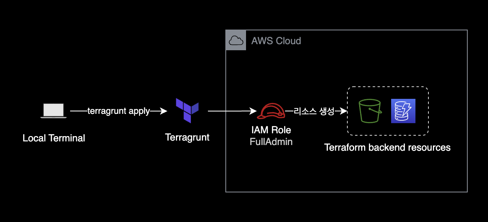
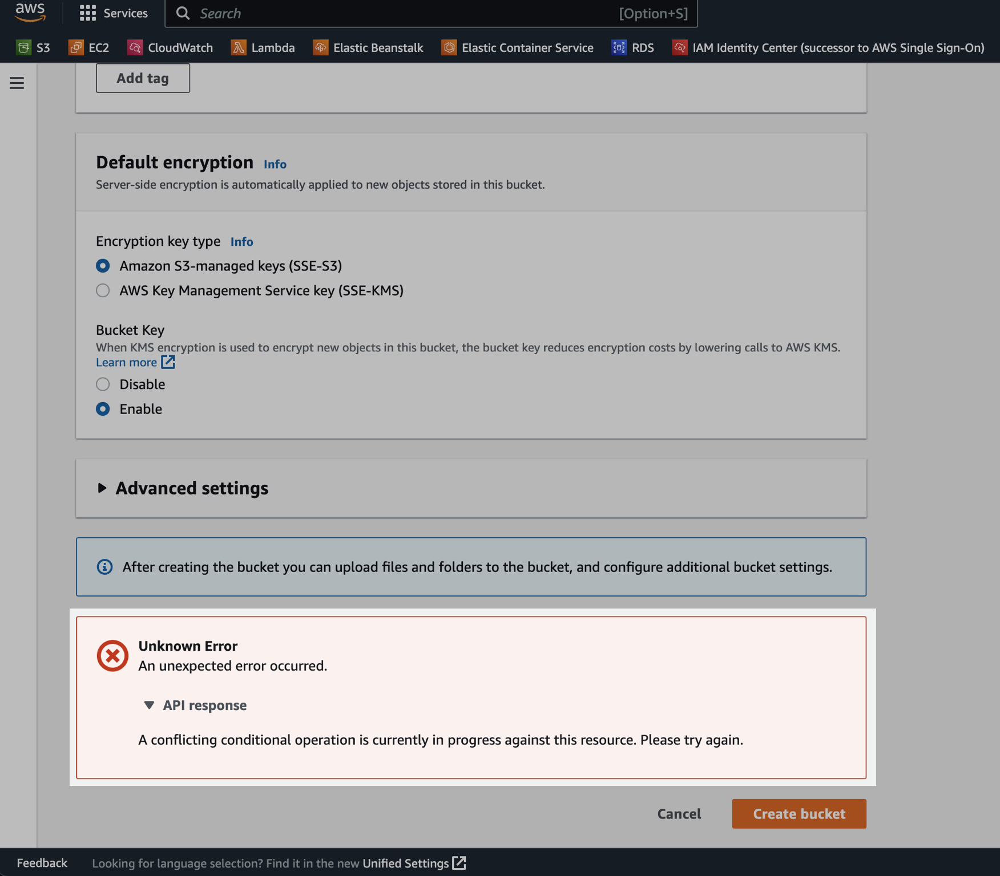

terragrunt 백엔드 S3 생성 실패
개요
terragrunt에서 초기 AWS 계정 셋업 과정에서 백엔드 S3 버킷 생성에 실패하는 상황에 대한 해결 가이드입니다.
환경
- Terragrunt version v0.42.3
- Terraform v1.3.6 on linux_arm64
증상
처음에 A 계정에 잘못 만들어서 백엔드 버킷을 삭제한 후, 다시 B 계정에 S3 버킷을 생성하려고 시도했습니다.
아래는 terraform apply 명령어를 실행하면 적용되는 terragrunt.hcl 파일입니다.
아래 코드가 테라폼 백엔드 상태 파일을 관리하는 S3 버킷과 DynamoDB를 생성합니다.
terraform {
extra_arguments "-var-file" {
commands = get_terraform_commands_that_need_vars()
# Note that this function searches relative to the child terragrunt.hcl file when called from a parent config.
optional_var_files = [
"${find_in_parent_folders("globals.tfvars", "ignore")}",
"${find_in_parent_folders("locals.tfvars", "ignore")}"
]
}
}
remote_state {
backend = "s3"
config = {
bucket = "xxxx-apne2-xxxx-terraform-backend-s3"
key = "xxxx/${path_relative_to_include()}/terraform.tfstate"
region = "ap-northeast-2"
encrypt = true
dynamodb_table = "xxxx-apne2-terraform-backend-dynamodb"
s3_bucket_tags = {
"ManagedBy" = "Terraform"
"Description" = "Terraform backend resource"
}
}
}
Terragrunt 코드가 백엔드를 생성하는 플로우를 구성도로 표현하면 다음과 같습니다.

B 계정에 버킷을 새로 만들기 위한 terragrunt apply 명령어 실행 과정에서 Backend S3 버킷 생성 시 다음과 같은 에러가 발생했습니다.
$ terragrunt apply
Remote state S3 bucket xxxx-apne2-xxxx-terraform-backend-s3 does not exist or you don't have permissions to access it. Would you like Terragrunt to create it? (y/n) y
ERRO[0059] Create S3 bucket with retry xxxx-apne2-xxxx-terraform-backend-s3 returned an error: Exceeded max retries (12) waiting for bucket S3 bucket xxxx-apne2-xxxx-terraform-backend-s3. Sleeping for 10s and will try again. prefix=[/mnt/git/tf/prd-terragrunt/xxxx-data/global/iam-policy/permission-set/xxxx-data-security-engineer/readonly-base-access]
AWS 콘솔에서 S3 버킷을 직접 생성 시에도 다음과 같은 에러가 발생합니다.
A conflicting conditional operation is currently in progress against this resource. Please try again.

원인
기존에 삭제한 S3 버킷이 완전히 삭제되지 않았는데 계속 생성을 시도해서 발생한 문제입니다.
AWS 콘솔에서 S3 버킷 삭제를 완료한 것처럼 보여도 실제로 AWS 뒷단에서는 S3 버킷을 바로 삭제하지 않습니다.
AWS 사용자가 버킷 삭제 요청을 전송하면 Amazon S3는 해당 버킷 이름을 삭제 대기열에 넣고 순차적으로 진행됩니다.
해결방안
문제를 해결하기 위한 방법은 간단합니다.
버킷이 완전히 삭제되기까지 잠시 기다린 후 다시 S3 버킷을 생성하면 됩니다.
제 경우 약 20분의 시간이 지난 후 다시 시도하니 해결되었습니다.
$ terragrunt apply
...
# 이후 백엔드 리소스가 성공적으로 생성되었고
# terraform 코드도 정상 실행됨
개선 포인트
이 문제는 인적실수로 발생했습니다.
문제를 해결하려면 기다리는 것 외에 특별한 조치방법도 없습니다.
최초에 테라폼 백엔드 리소스를 생성할 때 올바른 AWS 계정에 생성하도록 설정했는지를 더블체크하고 terragrunt apply 명령어를 실행하도록 합니다.
참고자료
Amazon S3에서 버킷을 다시 생성하려고 할 때 “A conflicting conditional operation is currently in progress against this resource"라는 오류가 발생하는 이유는 무엇입니까?
conflicting conditional operation is currently in progress against this resource 에러에 대한 원인과 해결방법.
Terragrunt - Keep your remote state configuration DRY
S3 백엔드에 대한 terragrunt 설명